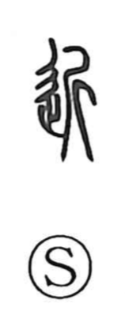

近

Kun: chikai, chikaku, chikazuku, chikazukeru | On: kin
near ・ close ・ to approach ・ vicinity
Explanation
In its old forms 近 brings together 止, the mark of a foot or step, and 斤, a sacred broadax. The graph is phono-semantic: 斤 supplies the on reading kin and at the same time names the ritual implement. Shirakawa sees the scene as a ceremony akin to that in 往: one touches the consecrated axe with the foot and then departs, thus setting out endowed with its spiritual power. The royal territory encircling the capital was called 圻, the sphere where this rite of 近 was observed, and from that context the character came to mean what lies “near” the capital in distance; later the idea of nearness naturally extended to time as well.